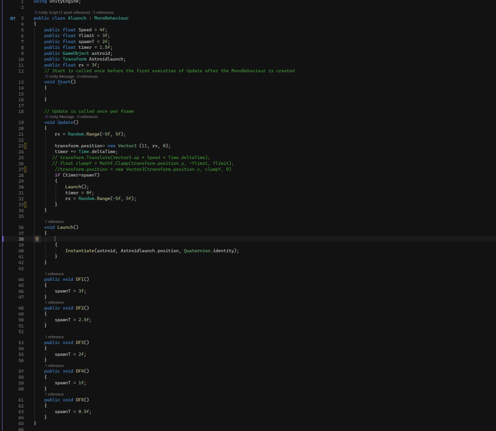
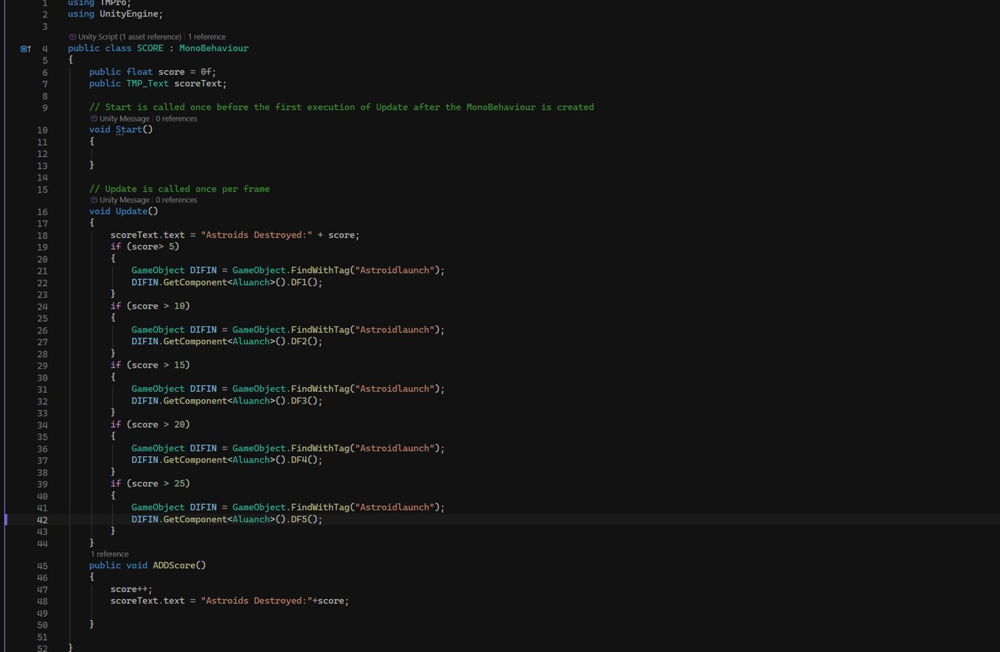
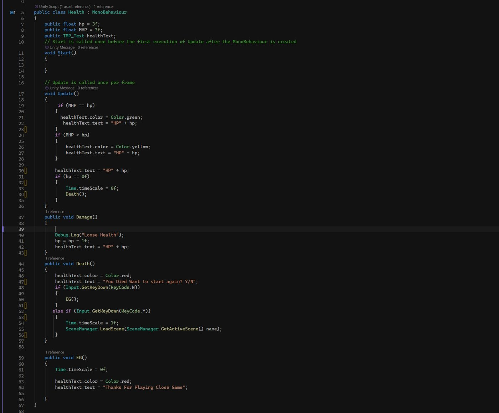
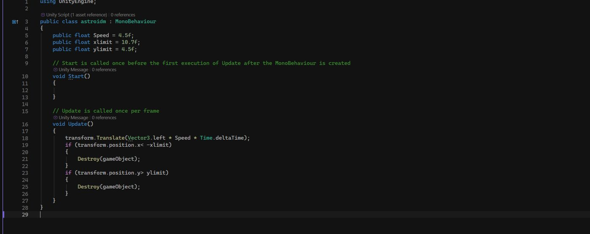
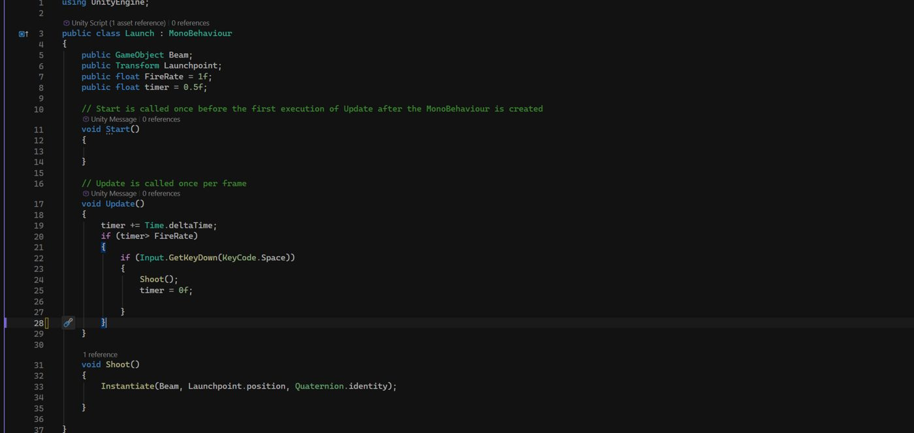
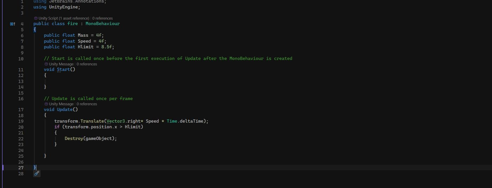
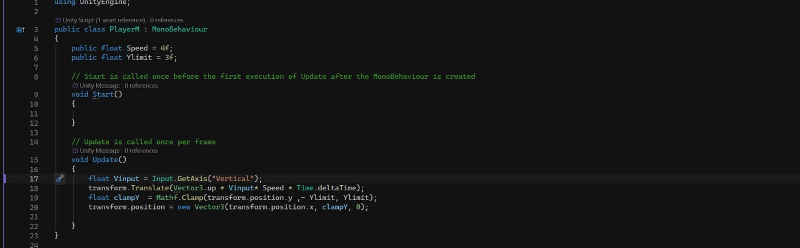
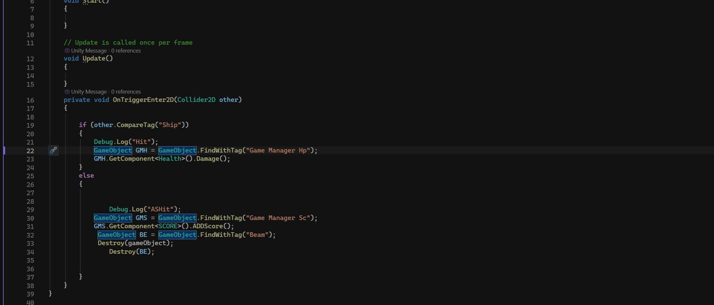

Unity games
Asteroid
Dodge and shoot incoming asteroids. Five difficulty levels ramp the spawn rate as your score climbs, with a fire-rate limit so you have to time your shots.
Gameplay
How it works
Aluanch launches an asteroid prefab at a random height on a fixed timer. The timer value is changed by five functions, DF1 to DF5, which the Score script calls as the score passes 5, 10, 15, 20 and 25. Astroidm moves each asteroid left and destroys it at a maximum distance.
The ship (PlayerM) slides up and down on W/S or the arrows, clamped to the screen. Launch fires the beam on space with a fire-rate limiter — you can't spam it, so at max difficulty you have to time your shots. Health gives the ship 3 HP shown in the UI: green at 3, yellow at 2 or 1 as a warning, and at 0 a death screen pauses the game and asks if you want to continue. A core system script ties it together, calling the right function when a collision is detected on the player or an asteroid.
Featured code
Aluanch.cs + SCORE.cs — difficulty as functions
// Aluanch.cs
void Update()
{
rx = Random.Range(-5f, 5f);
transform.position = new Vector3(11, rx, 0);
timer += Time.deltaTime;
if (timer >= spawnT)
{
Launch();
timer = 0f;
}
}
void Launch()
{
Instantiate(astroid, Astroidlaunch.position, Quaternion.identity);
}
public void DF1() { spawnT = 3f; }
public void DF2() { spawnT = 2.5f; }
public void DF3() { spawnT = 2f; }
public void DF4() { spawnT = 1f; }
public void DF5() { spawnT = 0.5f; }
// SCORE.cs
void Update()
{
scoreText.text = "Astroids Destroyed:" + score;
if (score > 5)
{
GameObject DIFIN = GameObject.FindWithTag("Astroidlaunch");
DIFIN.GetComponent<Aluanch>().DF1();
}
if (score > 10) { /* same again, calling DF2() */ }
if (score > 25) { /* up to DF5() */ }
}Difficulty lives in one script and is called from another — the score decides when, the launcher decides what changes.
All the scripts
8 scripts, each with what it does in my words.








Confidence, before and after
Before this I was 6/10; at the end it turned into 8/10. I found it very fun and not challenging, because it reused code from my other projects. I can confidently remake it.